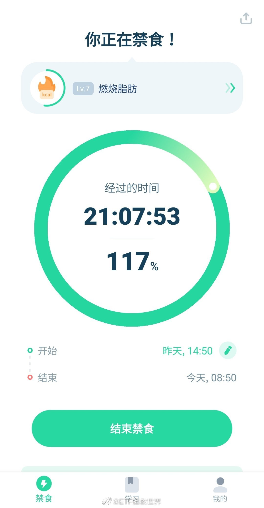
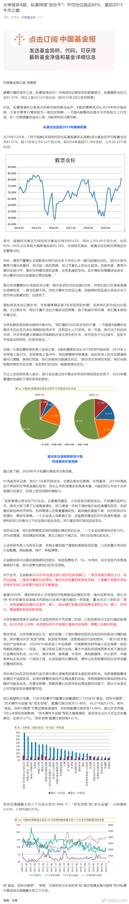

回复@随记心路:现代人没几个饿病的，哪个不是吃太多吃出三高糖尿病。这些东西保留自己看法吧//@随记心路:个人反对这些理念。一日三餐，五谷杂粮，该吃就吃。肠胃又没得罪你，没事干嘛饿它。//@ETF拯救世界:回复@以后做快乐健康的小女人:饿一饿，激活免疫系统，淘汰受损细胞@ETF拯救世界:据说绝大多数人一辈子吃的东西是定量的，谁先吃完谁先走。 
回复@以后做快乐健康的小女人:饿一饿，激活免疫系统，淘汰受损细胞//@以后做快乐健康的小女人:回复@ETF拯救世界:ee，医生说身体里面只有宿便，没有什么毒素，放心哟@ETF拯救世界:据说绝大多数人一辈子吃的东西是定量的，谁先吃完谁先走。
小时候的很多东西都不算数。包括成绩甚至长相等等。小时了了大未必佳，伤仲永，小时候长的好看大了长歪了的事还少吗。都不算数。就算一路学霸到清北哈佛麻省又怎样，一定幸福吗，一定“成功”吗，未必。反过来小时候不突出，长大了逆袭的也数不胜数。但从小培养孩子养成好的习惯，努力，不服输，遇到挫折不放弃，正直，善良，乐观，懂得感恩，多掌握几门终身受益的本事，是永远不会错的。
（接上条关于快乐教育）儿子上学第一学期拿了10张奖状。有语数英有体育。一年级的奖状虽然含金量不高，但能拿这么多没几个人，有些孩子一张也没有。我的理念就是学的时候认真学，养成好的学习习惯一辈子受益。从小能体会到学习知识的乐趣。玩的时候爸爸带你上山下海看世界，带你玩psxboxswitch。快乐教育呵呵呵谁爱信谁信。
呵呵@财联社APP:【私募最新仓位已达81.51% 创2015年3月以来的新高】财联社1月14日讯，中国基金报报道，华润信托近期发布的数据显示，私募最新仓位已达81.51%，同比上涨30.33个百分点，创2015年3月以来的新高。对此，私募普遍向记者表示目前均保持高仓运作，A股的情绪低点从2019年初开始反转，大家对春季行情有较为一致的好预期，一方面A股整体估值水平仍有较大上行空间，另一方面增量资金在入场，A股结构性行情可期。